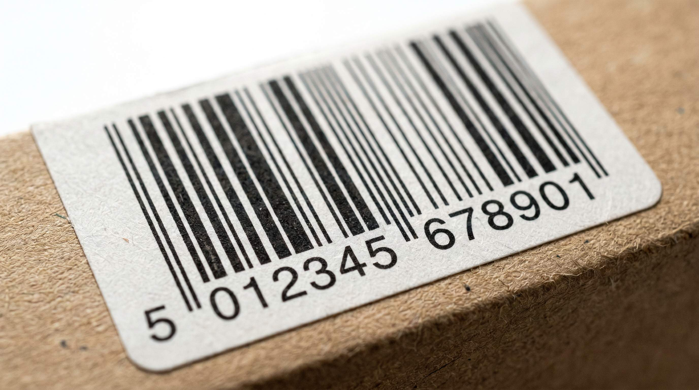

Når en scanner på et lager, i et supermarked eller hos en fragtmand laeser en stregkode, sker der noget simpelt og kraftfuldt på samme tid: et entydig nummer identificerer produktet på tvaers af hele forsyningskaeeden. Ingen fejlindtastninger, ingen forvirring om hvad der er hvad. Det er dna'et bag moderne logistik.
Alligevel er EAN-koder og stregkoder et omraade, der forvirrer mange nye virksomheder. Hvornår behøver man dem? Hvad er forskellen på de forskellige formater? Og hvad koster det at komme i gang?
Denne guide giver dig et klart overblik uden unoevendige detaljer.
👉 SmartPack haandterer stregkodescanning fra modtagelse til forsendelse. Se en demo af systemet her
EAN-koder vs. stregkoder: den grundlæggende forskel
En stregkode er det grafiske symbol. Det er de sorte streger og hvide mellemrum, der kan laeases af en scanner. Der er mange forskellige stregkodeformater, fx Code 128, QR-koder, Datamatrix og EAN.
EAN er en specifik standard. EAN-13 er det format du ser på næsten alle forbrugerprodukter: 13 cifre, der identificerer virksomheden og produktet globalt. EAN-8 er en kortere version til smaa produkter, hvor pladsen er begrænset.
Det vigtige at forståe: EAN-koder er ikke bare tilfaeldige tal. De er globalt entydige og administreret af GS1, en international non-profit organisation. Køber du et GS1-prefix, kan du oprette dit eget EAN-koder, der er gyldige overalt i verden.
Hvornår har du brug for EAN-koder
Der er fire situationer, der typisk kræver EAN-koder:
- Salg via supermarkeder og kaeeder: Alle store detailkaeeder kræver EAN-koder på de produkter, de fører. Uden gyldig EAN vil dit produkt ikke komme ind i kassesystemet.
- Salg på Amazon: Amazon kræver GTIN (Global Trade Item Number, som EAN er en del af) for de fleste produktkategorier. Mangler du den, kan du ikke oprette et produktlisting.
- Integration med grossister og distributoeerer: Grossister forventer at kunne identificere dit produkt i deres systemer. EAN gør dette automtisk og fejlfrit.
- Effektiv lagerstyring med WMS: Internt på dit lager kan du bruge dine egne interne koder, men en EAN-kode på produktet betyder at modtagelse, pluk og afsendelse kan scannes og verificeres automatisk.
Saelger du kun via din egen webshop, er det teknisk muligt at klare sig med interne produktkoder. Men EAN giver langt bedre integration til fragtløsninger, lager og eventuelle fremtidige salgskanaler.
Sådan får du EAN-koder
Den officielle vej i Danmark er via GS1 Denmark. Processen er:
- Bliv medlem af GS1 Denmark. årligt kontingent starter fra ca. 1.600 kr. afhaeengig af virksomhedsstørrelse.
- Du modtager et GS1 Virksomhedspraefiks, fx 5701234. Fra dette praefiks kan du oprette op til 100.000 unikke EAN-koder.
- Du genererer koederne selv ud fra dit praefiks og produktnummerering ved hjaelp af GS1's værktøjer.
- Du opretter labels med stregkoden og samler op via din labelprinter.
Der eksisterer også tredjeparts sider, der saelger individuelle EAN-koder billigt. Disse koder er teknisk set gyldige, men accepteres ikke altid af alle handelspartnere, da de ikke er knyttet til din virksomhed i GS1's globale database. Brug dem kun internt og aldrig til handel via detailkaeeder.
Stregkodeformater på lageret
Udover EAN bruges disse formater ofte internt på lagre:
- Code 128: Kompakt lineaer stregkode, der kan indeholde bogstaver og tal. Standard på fragtlabels og interne lagerpositioner.
- QR-kode: Todimensional kode der kan indeholde meget information. Bruges ofte til pakkekontrol og spoerbarhed.
- Datamatrix: Lille todimensional kode til smaae produkter, fx elektronikkomponenter.
- GS1-128: En udvidelse af Code 128 med standardiseret datastruktur, der bruges til forsendelseslabels (SSCC) og er krævet af mange store detailkaeeder ved levering.
I SmartPack kan du scanne alle disse formater ved modtagelse, pluk og forsendelse. Systemet matche scannede koder mod produktdatabasen og opdaterer lagerstatus i realtid.
Hvad sker der, når stregkoderne er forkerte
Fejl i stregkodeopsætning er underestimerede som kilde til lagerproblemerne. Typiske problemer:
- To produktvarianter (fx blaa og roed) har samme EAN, saa systemet kan ikke skelne dem.
- Stregkoden er printet saa lille, at scannere ikke kan laese den paalideligt.
- Leverandoerens interne kode er på pakken, men matcher ikke dit WMS-produktnummer.
- Labels er placeret på en krum overflade, der forvranger koden.
Disse fejl giver spildtid, plukfejl og dobbeltregistreringer. Test altid labels med din faktiske scanner foer du sætter dem i produktion.